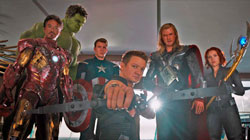
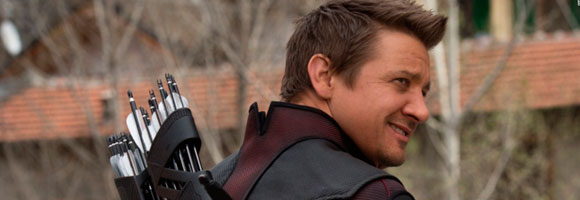

¿Donde esta Hawkeye?

CUIDADO, ALERTA DE SUPERSPOILER. Más allá de los acontecimientos de Avengers: Infinity War, una de las polémicas que no deja en paz a la película después de su estreno es la ausencia de uno de los superhéroes más populares del grupo: Clint Barton (Jeremy Renner), conocido por todo el mundo como Hawkeye.
El arquero de S.H.I.E.L.D. nunca apareció en la película, entendiéndose entonces por qué no fue incluido en las promociones de Infinity War. Sin embargo, sí fue mencionado hasta en dos ocasiones en la cinta dirigida por los hermanos Joe y Anthony Russo.
¿Qué estaba haciendo Clint mientras sus compañeros combatían a Thanos (Josh Brolin)? En resumen, disfrutaba su jubilación.
Al principio de Infinity War, cuando el Captain America (Chris Evans) y los Secret Avengers – Falcon (Anthony Mackie), Black Widow (Scarlett Johansson) y Scarlet Witch (Elizabeth Olsen) – intentan proteger a Vision (Paul Bettany) de los hijos de Thanos, es revelado por qué Clint – ni Scott Lang (Paul Rudd), mejor conocido como Ant-Man –, no los ayudan.
Black Widow dijo que tanto Hawkeye como* Ant-Man* desecharon la invitación de Steve Rogers para unirse a su equipo tras abandonar el Raft, la prisión donde habían terminado tras los eventos de Civil War. Como hombres de familia, eligieron no vivir como fugitivos, por lo que ambos llegaron a un acuerdo con el gobierno, aunque nunca fue precisada la magnitud del mismo.
Por la trama de Ant-Man and the Wasp, la próxima película del Universo Cinematográfico de Marvel (MCU), se sabe que Scott Lang se encuentra con arresto domiciliario para poder ver a su hija, mientras el cómic que ha servido como un preludio de Infinity War sugirió que Barton está en una situación similar. Ambos tendrían la orden de no usar más sus disfraces.
Se sintió su ausencia… y la de Ant-Man también (Foto: Marvel) Ahora, si bien ambos no aparecen en Infinity War, por las fotos del set se sabe que al menos Barton participará de Avengers 4, aunque con otro disfraz. Ya no sería* Hawkeye*, sino Ronin, su otro alter ego en Marvel Comics.
Por los minutos finales de Avengers: Infinity War puede suponerse que la familia de Barton también fue víctima del chasquido de dedos de Thanos y para la próxima aventura de los Avengers reaparecería como un hombre que busca venganza.
Clint también es mencionado en la escena post-créditos de Infinity War, justo antes de la desaparición de Nick Fury (Samuel L. Jackson) y Maria Hill (Cobey Smulder) como consecuencia del mismo ataque de Thanos.
Avengers 4 será estrenada será estrenada el 3 de mayo de 2019.
